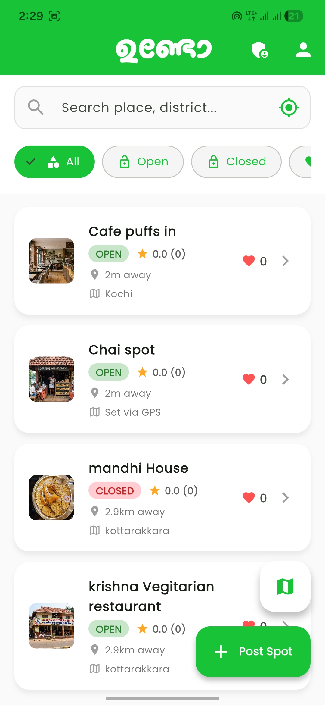
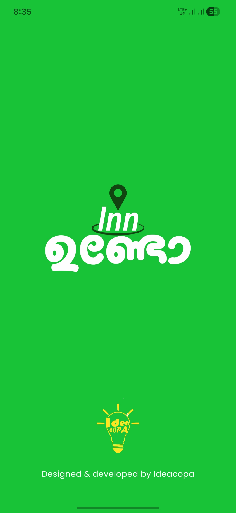
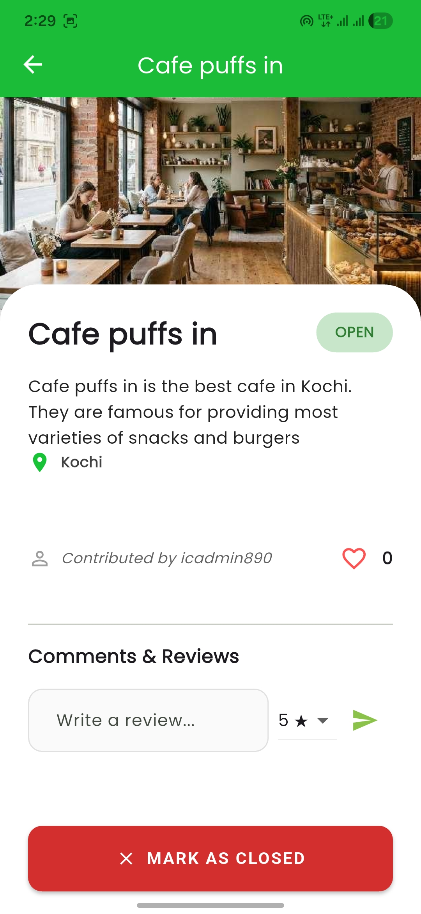
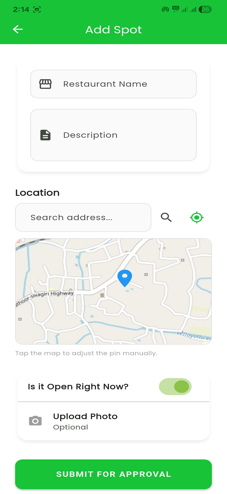

Find nearby spots to eat, check their real-time open/closed status, and even add new restaurants directly from your phone. Your ultimate local dining companion.

Everything you need to navigate your local dining scene.
Easily locate restaurants around you with our beautiful integrated map view relying on accurate GPS data.
No more guessing! Quickly see whether a restaurant is currently Open or Closed before you make the trip.
Notice a new restaurant? Users can seamlessly add new dining spots and update statuses within a 5km radius.
Take a sneak peek at our clean and intuitive interface.



Download the Inn Undo app today and start discovering the best places to eat around you.
Get the App NowAvailable for Android devices.